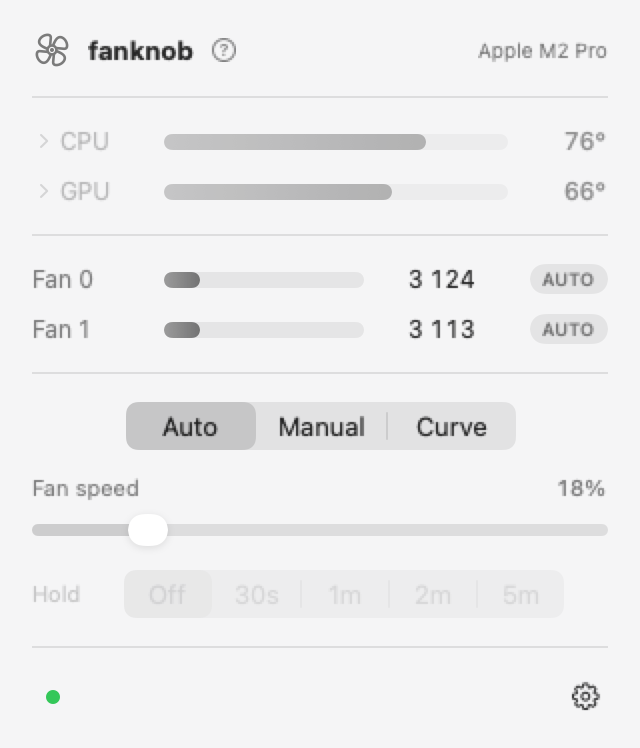
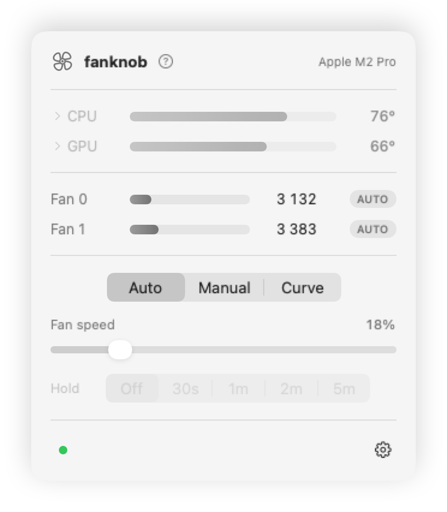
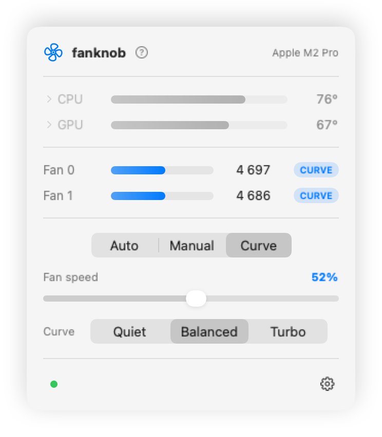

Your Mac's fans,
on a knob.
Turn them down when you want quiet, up when you're pushing it — or hand them to a curve and let them follow the heat.
No Homebrew? Get it here ·
Apple Silicon · macOS 15+
The fan icon appears in your menu bar as soon as it finishes.

The actual app, running.
Below 45 °C the fans stay near minimum; above 90 they're flat out. Between those points fanknob interpolates, re-checking every two seconds against a smoothed CPU average. Quiet and Turbo use their own tuning, and the app includes a draggable editor for saving your own profiles.
The app


What it does
One knob, every fan
Fans don't all spin at the same speeds, so you get 0–100 instead of raw numbers. On a 14″ MacBook Pro that's 2,317–6,800 rpm.
Curves do the thinking
Quiet, Balanced or Turbo — or drag your own points in the app, preview the result live, and save, import or export the profile.
A thermal backstop
While you're overriding the fans, fanknob hands them back to the firmware if the hottest CPU or GPU sensor reaches 100 °C by default.
There's a CLI too
fanknob set 40, fanknob preset quiet, or
fanknob tui for a live dashboard. JSON status and
privacy-safe diagnostics are built in for scripts and issue reports.
One thing worth knowing. If you pin the fans to a fixed speed, you're the one managing heat now, not your Mac. The 95 °C limit is a backstop, but a curve is the better bet if you're leaving something running — it reacts, a fixed speed just sits there. Fan control is system-wide: on a shared Mac, any local account can change the speed, mode and saved settings.
Help
Troubleshooting
- It says "helper not installed", or the light is orange
-
The background helper isn't running, so fanknob can see your fans but
can't move them. Reinstalling usually sorts it. To start it yourself:
sudo launchctl bootstrap system /Library/LaunchDaemons/com.fanknob.daemon.plist
- My fans are stuck at one speed
-
Give them back to the firmware:
fanknob auto
- Curves and presets aren't doing anything
- They need the helper running — it's the part that keeps checking the temperature.
- Still stuck?
-
The helper writes to
/var/log/fanknobd.log, andfanknob statuswill tell you what it thinks is happening. If that's no help, open an issue.